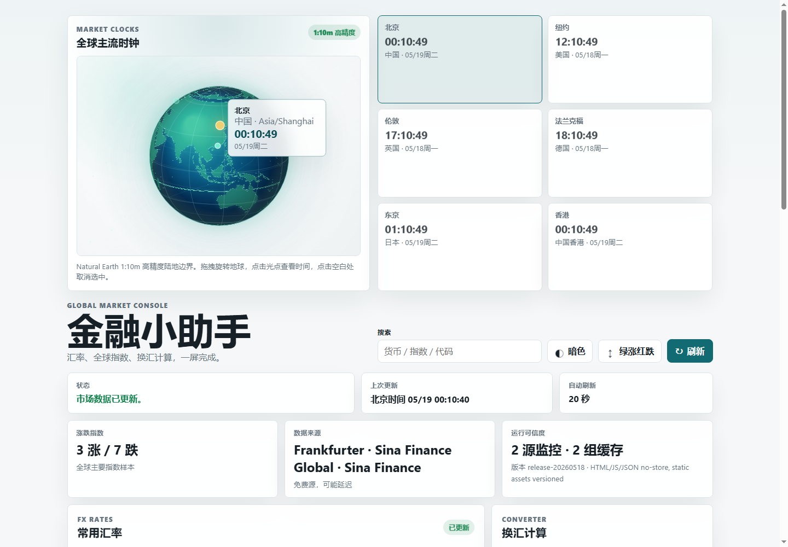
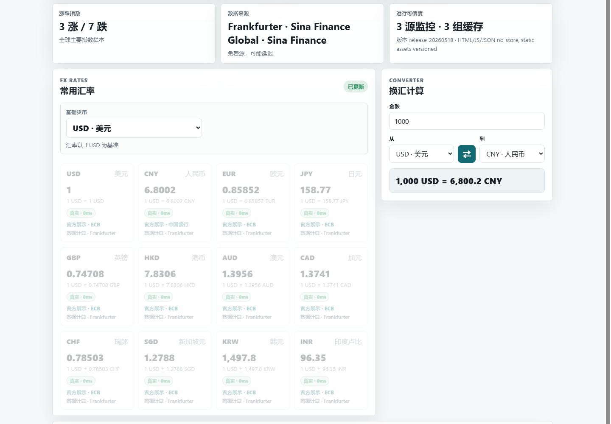
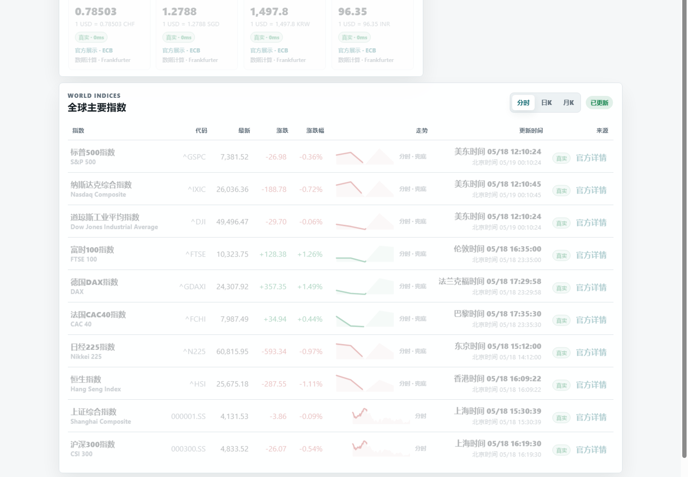
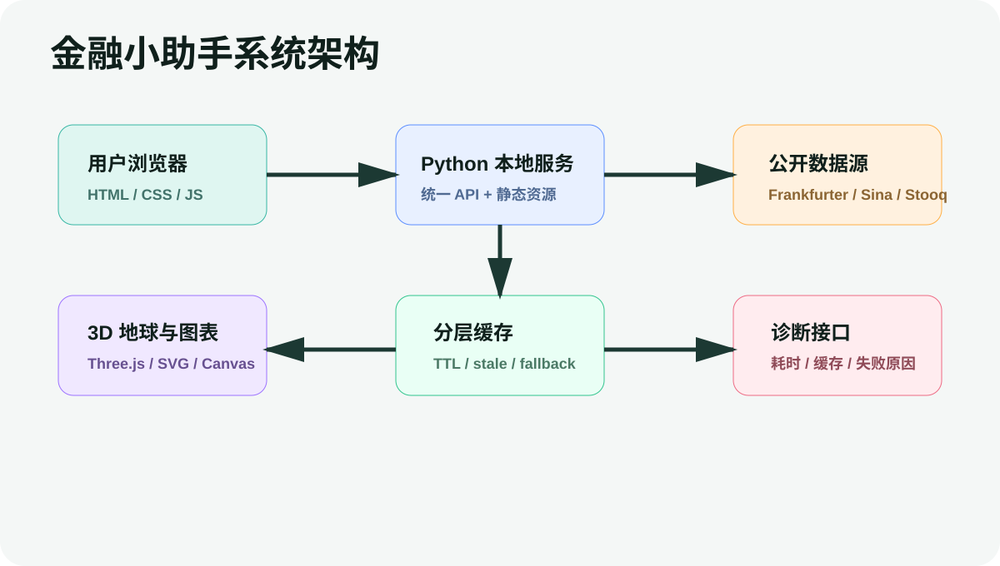
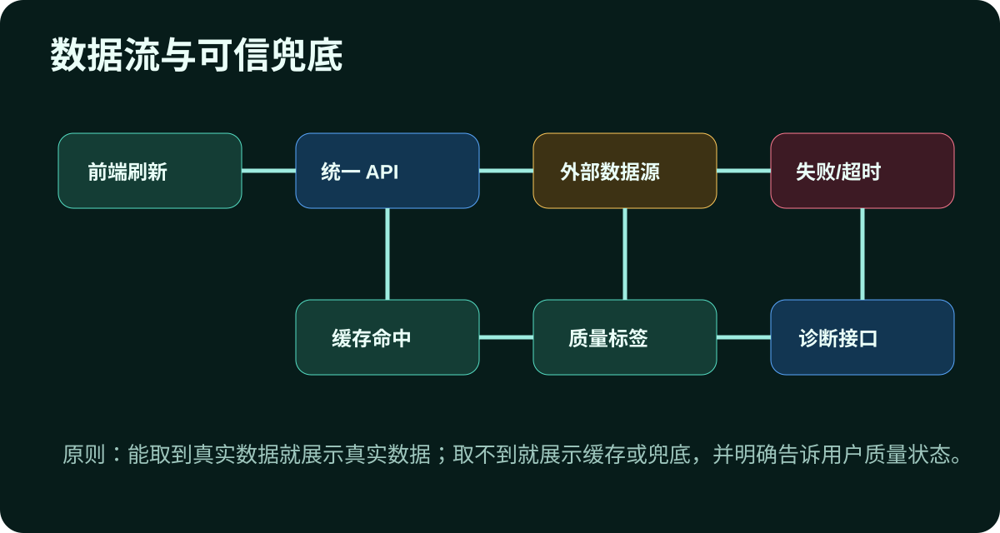
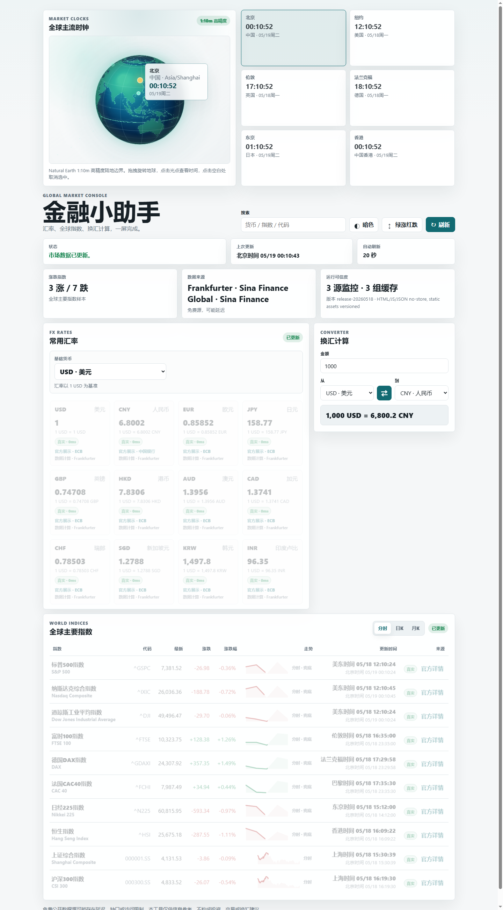

史健申
负责项目统筹、需求抽象、数据可信度测试、公开访问验证、产品叙事和呈现路径设计。
GLOBAL MARKET INTELLIGENCE CONSOLE
一个面向金融学习与市场观察场景的轻量级全球市场数据控制台。
TEAM STRUCTURE
负责项目统筹、需求抽象、数据可信度测试、公开访问验证、产品叙事和呈现路径设计。
负责技术路线指导、架构与创新性把关、项目规范指导，帮助系统形成可审查的工程表达。
 组员 / Engineering & Visualization
组员 / Engineering & Visualization
负责产品设计、Python 数据网关、数据源适配、前端核心交互、3D 可视化和最终工程交付。
WHY NOW
汇率、指数、趋势图和市场时间分散在不同站点，用户需要频繁切换上下文。
免费公开源可能延迟或失效，但传统页面很少把质量状态直接告诉用户。
全球市场不是同一时间运行，市场本地时间和北京时间需要被同时表达。
很多产品只能停留在本机环境，无法让外部用户通过链接即时体验完整能力。
PRODUCT POSITIONING
把汇率、指数、图表、时钟、来源、质量标签和公开访问整合为一个低依赖、高可用的金融观察工作台。
RUNNING PRODUCT

首屏把地理位置、时区和读秒联动放在同一视觉焦点里。
用户可以快速定位货币或指数，并切换主题和涨跌颜色习惯。
运行可信度、来源、缓存状态和刷新节奏都在主界面直接呈现。
RUNNING DETAILS


页面不是单张静态图，而是由汇率、换算、指数、趋势、来源和诊断状态组成的连续工作流。
API Health Cache State Source StatusTECHNICAL ARCHITECTURE

原生 HTML/CSS/JS 与 Canvas/SVG/地球可视化负责呈现和交互。
本地 HTTP 服务统一承接 API、缓存、诊断和静态资源分发。
公开市场源被归一成稳定领域模型，并保留质量状态。
DATA INTELLIGENCE LAYER

字段归一、时区对照、同源涨跌幅、质量标签、失败原因沉淀。
DATA TRUST LAYER
IMMERSIVE UX
市场城市光点、拖拽旋转、点击选中、时钟联动，形成空间化市场认知。
分时、日 K、月 K 三模式，支持从总览到详情的渐进式探索。
红涨绿跌与绿涨红跌可切换，尊重不同市场用户习惯。
FULL STACK SNAPSHOT
产品长页截图体现了完整信息架构：顶部市场时钟，中段汇率和换汇，后段指数与趋势图，底层以诊断能力支撑可信表达。

INNOVATION VALUE
无需 node/npm、无需数据库、无需付费 API，降低环境失败概率。
把数据源状态、缓存、延迟和失败原因透明化。
3D 地球与趋势图让全球市场从表格变成可探索空间。
通过临时公网隧道让外部用户直接访问完整产品。
ENTREPRENEURIAL POTENTIAL
目标用户不是专业交易员，而是金融学习者、课程课堂、校园社团、小型研究小组和需要轻量数据工作台的团队。
PRODUCT JOURNEY
拖拽旋转，点击市场光点，展示实时读秒和时区联动。
切换基础货币，完成高精度换算，点击中国银行或 ECB 页面核验。
展示全球指数，切换分时 / 日 K / 月 K，并说明质量标签。
生成 trycloudflare.com 链接，让外部用户直接打开完整产品。
TECHNICAL MOAT
通过适配器屏蔽数据源差异，将汇率、指数、趋势、时区和来源链接归一为稳定领域模型。
短缓存、长缓存、请求合并和 stale-while-revalidate 共同降低刷新压力和失败冲击。
诊断视图暴露缓存年龄、数据源状态、失败原因和接口耗时，让系统不止于视觉。
3D 地球、三模式图表、主题系统和涨跌习惯切换，构成可展示、可理解、可传播的产品体验。
FINAL STATEMENT
用最低部署成本，呈现足够专业的金融数据体验。